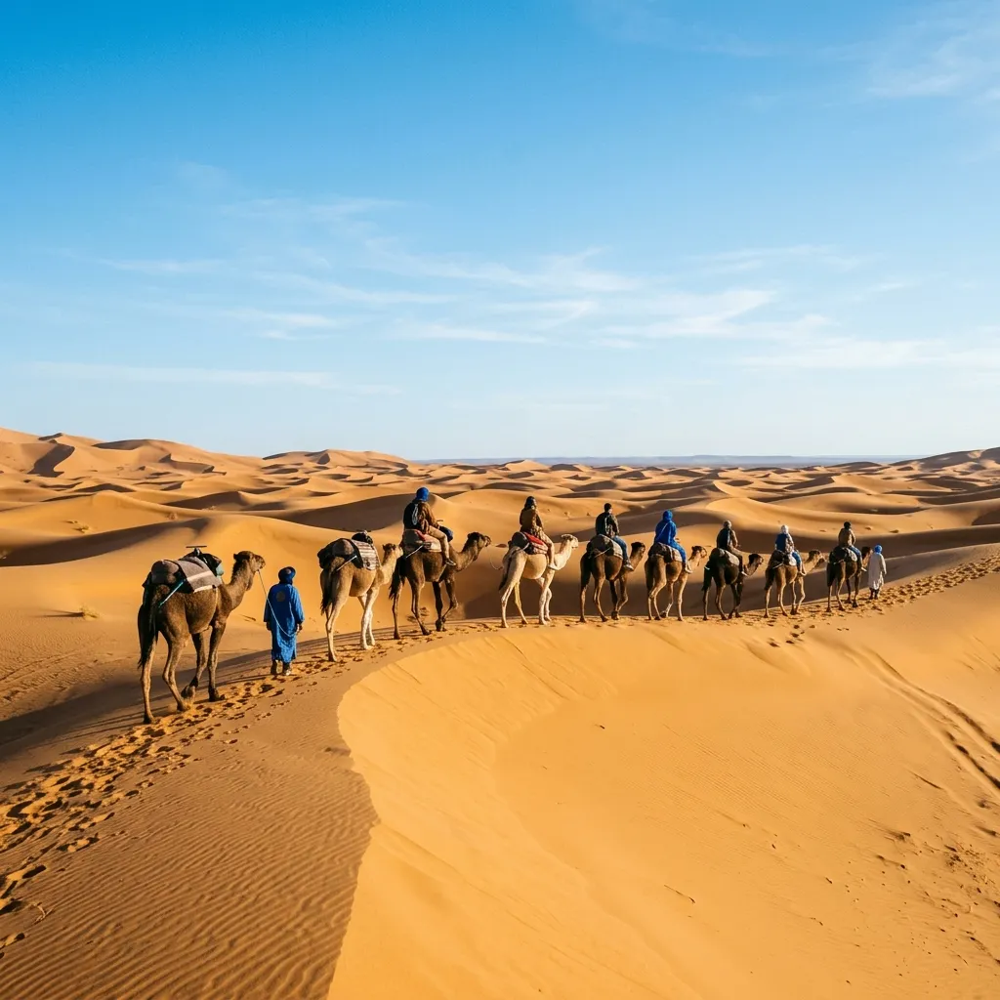
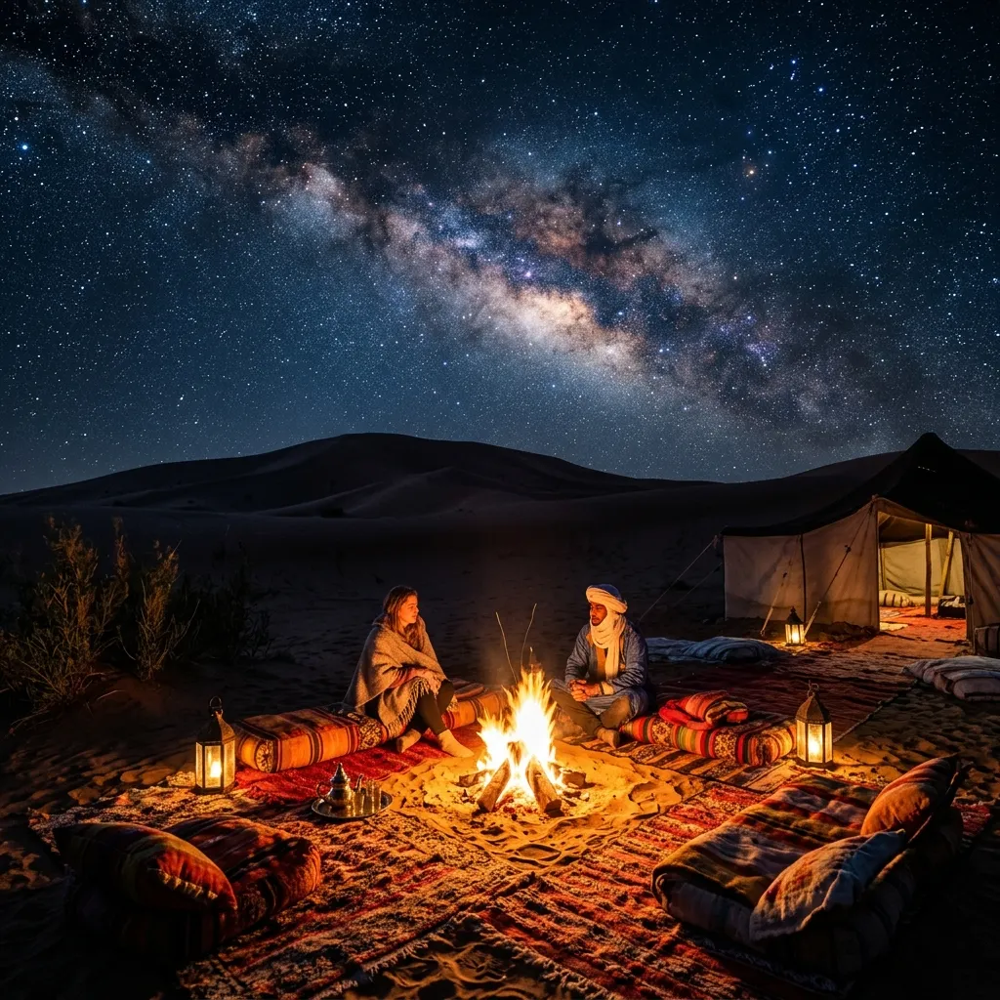

A beautiful spring morning in the Moroccan Sahara.
The Sahara Desert is one of the most mesmerizing landscapes on Earth. Stretching across North Africa, the Moroccan portion of the Sahara—specifically the dunes of Erg Chebbi (Merzouga) and Erg Chigaga—draws hundreds of thousands of travelers each year. But a critical question every traveler must ask before booking their flights is: When is the absolute best time to visit the Sahara Desert in Morocco?
Because the Sahara is a landscape of extremes, timing is everything. A trip in April will be a vastly different experience than a trip in August or January. In this massive, comprehensive 3,000+ word guide, our local Moroccan travel experts break down everything you need to know about the weather, seasonal variations, crowds, packing strategies, and photography tips to ensure your desert expedition is nothing short of perfect.
1. The Short Answer: The Golden Seasons
If you are looking for the absolute best conditions—warm but not scorching days, and cool but not freezing nights—the transitional seasons are your target window.
- Spring (Mid-March to May): Widely considered the peak season for the Sahara. Temperatures range from 20°C to 28°C (68°F to 82°F) during the day.
- Autumn (September to November): The second golden window. The brutal heat of summer has dissipated, leaving clear skies and comfortable trekking weather.

The crystal clear skies of a Sahara winter offer unparalleled stargazing.
2. Month-by-Month Sahara Weather Breakdown
To truly understand what to expect, we must look at the desert on a month-by-month basis. The climate shifts dramatically, and being prepared is the key to enjoying your tour.
January
Average: 15°C / 59°F (Day) | 2°C / 35°F (Night)
January is the coldest month in the Moroccan Sahara. During the day, the sun shines brightly, making it perfectly comfortable for camel trekking while wearing a light jacket or sweater. However, the moment the sun dips below the horizon, the temperature plummets rapidly. Nighttime temperatures frequently approach freezing. If you visit in January, you will be rewarded with the clearest skies of the year—perfect for astrophotography. You must pack thermal underwear, a heavy winter coat, a warm hat, and gloves. Our luxury camps provide heavy wool blankets and space heaters, ensuring a comfortable sleep despite the chill outside. Because understanding this month is critical for your planning, you must prepare accordingly. The desert is unforgiving but incredibly rewarding if you respect its climate. Make sure you consult with your guides about the specific weather forecast a week before your arrival, as anomalies do occur.
February
Average: 18°C / 64°F (Day) | 5°C / 41°F (Night)
February sees a slight warming trend. The days become slightly longer and warmer, making the desert treks incredibly pleasant. The sand begins to hold a bit more warmth during the day. Nights are still very cold, requiring winter layers, but the biting edge of January starts to soften. This is an excellent month to visit if you want to avoid the peak crowds of spring while still enjoying very manageable weather. Stargazing remains phenomenal due to the lack of atmospheric moisture. Because understanding this month is critical for your planning, you must prepare accordingly. The desert is unforgiving but incredibly rewarding if you respect its climate. Make sure you consult with your guides about the specific weather forecast a week before your arrival, as anomalies do occur.
March
Average: 23°C / 73°F (Day) | 10°C / 50°F (Night)
March marks the beginning of the high season. The desert truly comes alive. Daytime temperatures are perfect for T-shirts and light trousers, though you will still need a warm fleece or jacket for the evening campfires. One thing to note about March is that it brings a higher chance of spring winds, which can occasionally kick up minor sandstorms (known locally as the Sirocco). While these are usually brief, it is wise to bring a scarf (which your guide can teach you how to wrap in the traditional Tuareg style) to protect your face and camera equipment. Because understanding this month is critical for your planning, you must prepare accordingly. The desert is unforgiving but incredibly rewarding if you respect its climate. Make sure you consult with your guides about the specific weather forecast a week before your arrival, as anomalies do occur.
April
Average: 27°C / 80°F (Day) | 14°C / 57°F (Night)
April is arguably the single best month to visit the Sahara. The daytime heat is glorious—warm enough to bask in the sun but not so hot that it becomes oppressive. The nights are cool and comfortable, perfect for sitting around the campfire in a light sweater. Because the weather is so ideal, this is also the busiest time in the desert. Booking your luxury camp and tour well in advance is highly recommended. The dunes take on a vibrant golden hue in the crisp spring air. Because understanding this month is critical for your planning, you must prepare accordingly. The desert is unforgiving but incredibly rewarding if you respect its climate. Make sure you consult with your guides about the specific weather forecast a week before your arrival, as anomalies do occur.
May
Average: 32°C / 89°F (Day) | 18°C / 64°F (Night)
In May, the desert starts to hint at the coming summer. The days begin to feel genuinely hot, particularly between noon and 3 PM. Camel treks are typically scheduled for the early morning or late afternoon to avoid the peak heat. The evenings are spectacular—balmy and warm, allowing you to dine outdoors under the stars without needing heavy layers. If you enjoy heat but want to avoid the extremes of summer, early May is a fantastic choice. Because understanding this month is critical for your planning, you must prepare accordingly. The desert is unforgiving but incredibly rewarding if you respect its climate. Make sure you consult with your guides about the specific weather forecast a week before your arrival, as anomalies do occur.
June
Average: 38°C / 100°F (Day) | 23°C / 73°F (Night)
Summer arrives in June. The daytime heat becomes intense, often nearing 40°C. The sand itself becomes too hot to walk on barefoot by mid-morning. If you visit in June, your itinerary will be adjusted: you will spend the middle of the day resting in air-conditioned accommodations or shaded oasis areas, and venture into the dunes only at sunrise or sunset. Hydration becomes critical. The tradeoff is that the desert is much quieter, and the warm nights are incredibly peaceful. Because understanding this month is critical for your planning, you must prepare accordingly. The desert is unforgiving but incredibly rewarding if you respect its climate. Make sure you consult with your guides about the specific weather forecast a week before your arrival, as anomalies do occur.
July
Average: 42°C+ / 108°F+ (Day) | 26°C / 79°F (Night)
July is the peak of summer. We generally advise against deep desert excursions for young children, the elderly, or those sensitive to heat during this month. The sun is punishing, and the risk of heat exhaustion is real. If you must visit in July, ensure your tour operator provides highly air-conditioned 4x4 vehicles. Camel treks are strictly limited to the very early dawn or late dusk. Some luxury camps even close during this period due to the extreme conditions. Because understanding this month is critical for your planning, you must prepare accordingly. The desert is unforgiving but incredibly rewarding if you respect its climate. Make sure you consult with your guides about the specific weather forecast a week before your arrival, as anomalies do occur.
August
Average: 41°C+ / 106°F+ (Day) | 25°C / 77°F (Night)
Similar to July, August is blisteringly hot. Occasional summer thunderstorms can roll over the Atlas Mountains and occasionally reach the desert edges, bringing dramatic clouds and brief, intense rain, though this is rare. The heat dictates the rhythm of the day: early rising, long midday siestas, and late evening activities. Only highly resilient travelers should attempt a full Sahara tour in August. Because understanding this month is critical for your planning, you must prepare accordingly. The desert is unforgiving but incredibly rewarding if you respect its climate. Make sure you consult with your guides about the specific weather forecast a week before your arrival, as anomalies do occur.
September
Average: 35°C / 95°F (Day) | 21°C / 70°F (Night)
September signals the gradual return of comfortable weather. The first half of the month can still feel like summer, but by late September, the intense heat breaks. The days become manageable again, and the nights are beautifully warm. This is the start of the autumn high season. The light in September is particularly beautiful, offering a soft, golden quality that photographers love as the dust from summer settles. Because understanding this month is critical for your planning, you must prepare accordingly. The desert is unforgiving but incredibly rewarding if you respect its climate. Make sure you consult with your guides about the specific weather forecast a week before your arrival, as anomalies do occur.
October
Average: 28°C / 82°F (Day) | 15°C / 59°F (Night)
October rivals April for the title of "Best Month." The weather is absolutely sublime. The blistering heat is gone, replaced by perfectly warm days and pleasantly cool nights. You can spend all day exploring the dunes, visiting nomadic families, or quad biking without overheating. Like April, this is peak season, so expect camps to be full and book your tours well in advance. The sunsets in October are arguably the most vivid of the year. Because understanding this month is critical for your planning, you must prepare accordingly. The desert is unforgiving but incredibly rewarding if you respect its climate. Make sure you consult with your guides about the specific weather forecast a week before your arrival, as anomalies do occur.
November
Average: 22°C / 71°F (Day) | 10°C / 50°F (Night)
November brings the transition into winter. The days are beautifully crisp and sunny—excellent for hiking and long camel treks. However, the nights begin to bite again. You will need to bring back the winter layers: a warm jacket, thermals, and a beanie for the evenings. November is an excellent compromise month: you avoid the massive crowds of October, get great daytime weather, and only have to deal with the cold at night. Because understanding this month is critical for your planning, you must prepare accordingly. The desert is unforgiving but incredibly rewarding if you respect its climate. Make sure you consult with your guides about the specific weather forecast a week before your arrival, as anomalies do occur.
December
Average: 16°C / 61°F (Day) | 3°C / 37°F (Night)
December is cold, crisp, and clear. Similar to January, the days are sunny and comfortable, but the nights demand serious winter gear. Spending New Year’s Eve in the Sahara is an incredibly popular bucket-list experience. The atmosphere in the camps is festive, with massive campfires, traditional Berber drumming, and celebrations under a canopy of stars. Just ensure you are prepared for near-freezing temperatures when you retreat to your tent. Because understanding this month is critical for your planning, you must prepare accordingly. The desert is unforgiving but incredibly rewarding if you respect its climate. Make sure you consult with your guides about the specific weather forecast a week before your arrival, as anomalies do occur.
3. Summer vs. Winter: A Quick Comparison
| Feature | Summer (Jun - Aug) | Winter (Dec - Feb) |
|---|---|---|
| Daytime Temps | 38°C to 45°C (Intense Heat) | 15°C to 20°C (Mild & Crisp) |
| Nighttime Temps | 23°C to 28°C (Warm) | 0°C to 5°C (Freezing) |
| Camel Trekking | Restricted to Dawn/Dusk | Possible all day |
| Crowds | Very Low (Off-peak) | Medium (High around NYE) |
| Stargazing | Good, but atmospheric haze possible | Exceptional, zero humidity |
A luxury camp setup provides comfort no matter the season.
4. The Ultimate Sahara Packing List
Packing for the desert requires strategy. The vast temperature swings mean you must pack in layers. Regardless of the month you travel, the following items are non-negotiable for a successful trip:
- A high-quality scarf or turban: The traditional Cheche (which you can buy on the way) is essential to protect your face and neck from the sun, wind, and sand.
- Sunglasses with UV protection: The glare off the golden sand is incredibly bright. Polarized lenses are a bonus.
- Layered clothing: Base layers that wick sweat, a comfortable mid-layer, and an outer shell. If traveling in winter, add thermal underwear and a heavy coat.
- Closed-toe shoes: While sandals are fine around the camp, closed shoes (like light hiking boots or sneakers) are better for walking on the dunes and protecting your feet from hot sand or evening chill.
- A portable power bank: While luxury camps have electricity, charging points can be limited. Bring a power bank to ensure your camera and phone are always ready.
- Basic First Aid & Medications: The desert is remote. Bring your own painkillers, rehydration salts, and any personal medications.
- Wet wipes and hand sanitizer: Water is a precious commodity in the desert. While luxury camps have running water, wipes are invaluable during the journey.
We also highly recommend bringing a small, lightweight daypack. Your main luggage will usually be transported to the camp via a 4x4 vehicle, while you ride the camels. A daypack allows you to carry your water, camera, and an extra layer of clothing on the camel trek itself.
5. Photography Tips for the Dunes
The Sahara is a photographer's dream, but it also presents unique challenges. The fine, powdery sand can wreak havoc on camera gear. Here are our top tips for capturing the magic without ruining your equipment:
- Do not change lenses in the dunes: The wind carries micro-particles of sand that will instantly stick to your camera sensor. Choose a versatile zoom lens (like a 24-70mm) and keep it attached.
- Use a UV filter: Not just for the sun, but to protect your actual lens glass from blowing sand which can act like sandpaper.
- Embrace the Golden Hour: The hour after sunrise and the hour before sunset are when the dunes come alive with deep shadows and vibrant oranges and reds. Midday light flattens the landscape and washes out the colors.
- Protect your gear overnight: If you are visiting in winter, condensation can form on your camera due to the extreme temperature drop. Keep your camera in a sealed bag overnight.
- Bring a tripod for astrophotography: The Sahara has zero light pollution. A sturdy tripod is essential for capturing the Milky Way.
Remember to also put the camera down. The silence and scale of the Sahara is something to be felt, not just photographed. Take a moment to sit on a dune, listen to the wind, and absorb the sheer magnitude of the landscape.
6. How to Choose the Right Desert Camp
Not all desert experiences are created equal. When booking your tour, you will generally have the choice between a standard camp and a luxury camp. At RoamMorocco, we specialize in luxury experiences because we believe the harshness of the desert should be balanced with supreme comfort.
Standard Camps: Traditional nomadic tents woven from goat hair. They are authentic but basic. You will usually have shared bathroom facilities located outside the tents, and heating is virtually nonexistent. Beds are simple mattresses on the floor.
Luxury Camps: Large, spacious canvas tents that feel like a high-end hotel room. They feature king-sized beds with high-quality linens, en-suite bathrooms with flushing toilets and hot showers, and gorgeous Moroccan decor. Crucially, they offer better insulation against both the heat and the cold.
Given the extreme temperatures of the Sahara, upgrading to a luxury camp is the best investment you can make for your trip. It ensures that after a long day of travel and exploration, you can wash off the sand in a hot shower and sleep deeply in a comfortable bed.
Desert Planning Comparison: Merzouga vs Zagora
Not sure which desert to visit or how to structure your 3-day circuit from Marrakech? Read our complete breakdown of Erg Chebbi dunes vs Zagora gravel plains, camp luxury standards, and realistic 2026 pricing.
Read the Merzouga vs Zagora Desert Guide →Timing the seasons is only half the secret—choosing the right desert destination defines your entire experience. Before locking in dates, explore our detailed showdown on Merzouga vs Zagora Sahara Tours, learn what layers to pack for the desert's extreme diurnal temperature swings in what to wear in Morocco, and discover how our private drivers navigate the High Atlas in Morocco private driver costs.
Ready to Plan Your Perfect-Season Sahara Journey?
Experience Erg Chebbi at the ideal time of year with Roam Morocco. Private luxury Toyota Prado 4×4 transportation, vetted English-speaking Berber chauffeurs, heated desert camp suites, and 24/7 Marrakech concierge support.